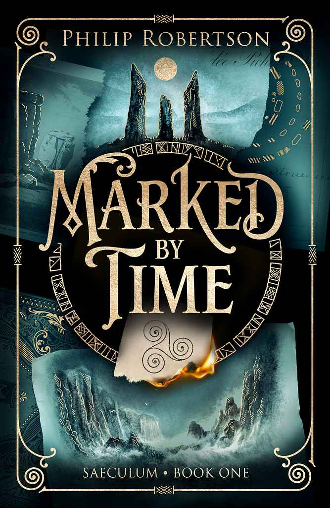

Marked By Time
Book Name : Marked By Time
Author Name : Philip Robertson
Published Year : 1893
Genre : Fiction / Mystery
About the Book
Marked By Time is an intriguing story about memories, choices, and the moments that shape our lives. It explores how the past can leave its mark on the present while reminding us that every new moment gives us a chance to create a different future.
Why I Like This Book
I like this book because it has a meaningful story and encourages us to value our experiences. The message about learning from the past and moving forward makes it interesting and inspiring to read.
“Every moment leaves a mark, but every new moment gives us a chance to begin again.”
— Marked By Time